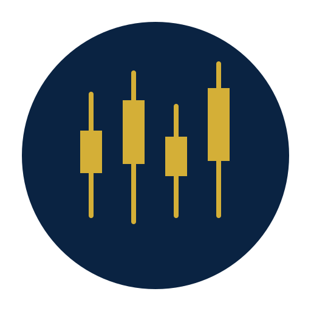
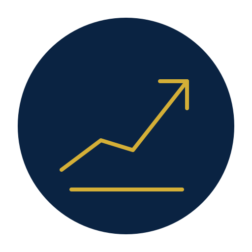

GESTIÓN ESTRATÉGICA DE RIESGOS Mercado de divisasSolicitar diagnóstico
Mercado de divisasSolicitar diagnóstico
Blindamos tu empresa ante la volatilidad.

Forwards y opciones
Derivados financierosEstructuras avanzadas

Forwards y opciones
Derivados financieros